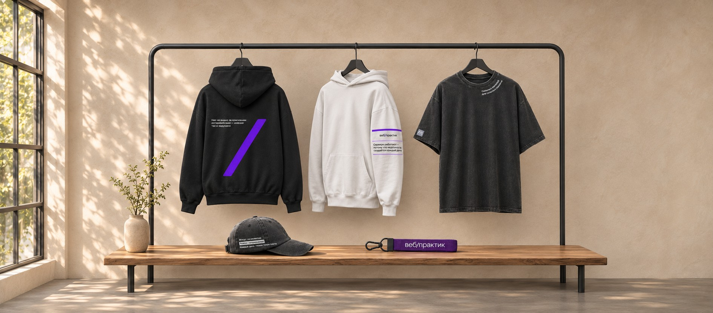
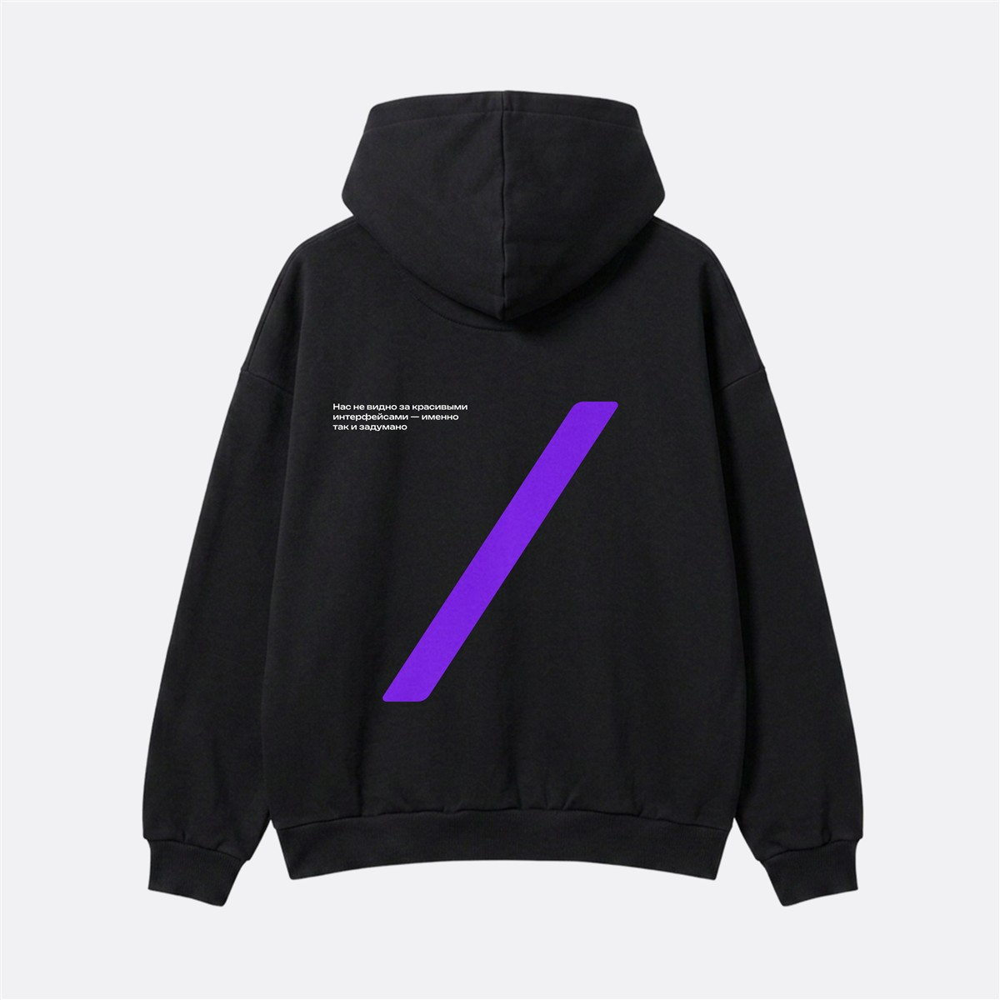
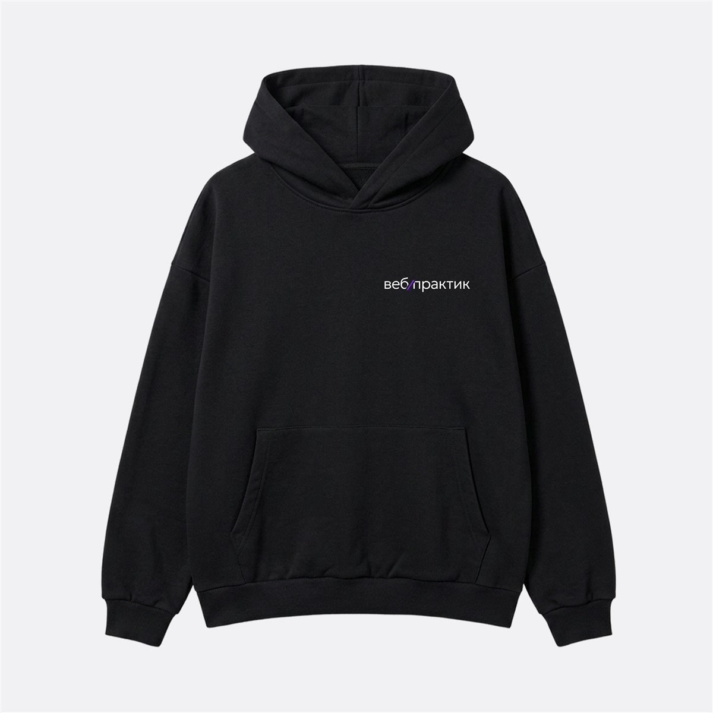
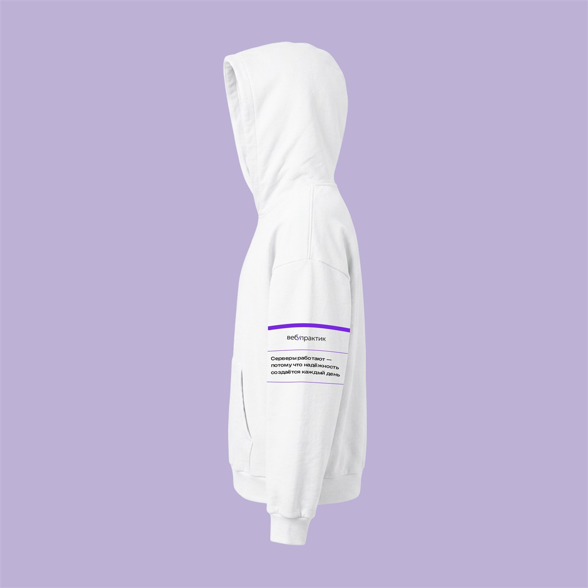
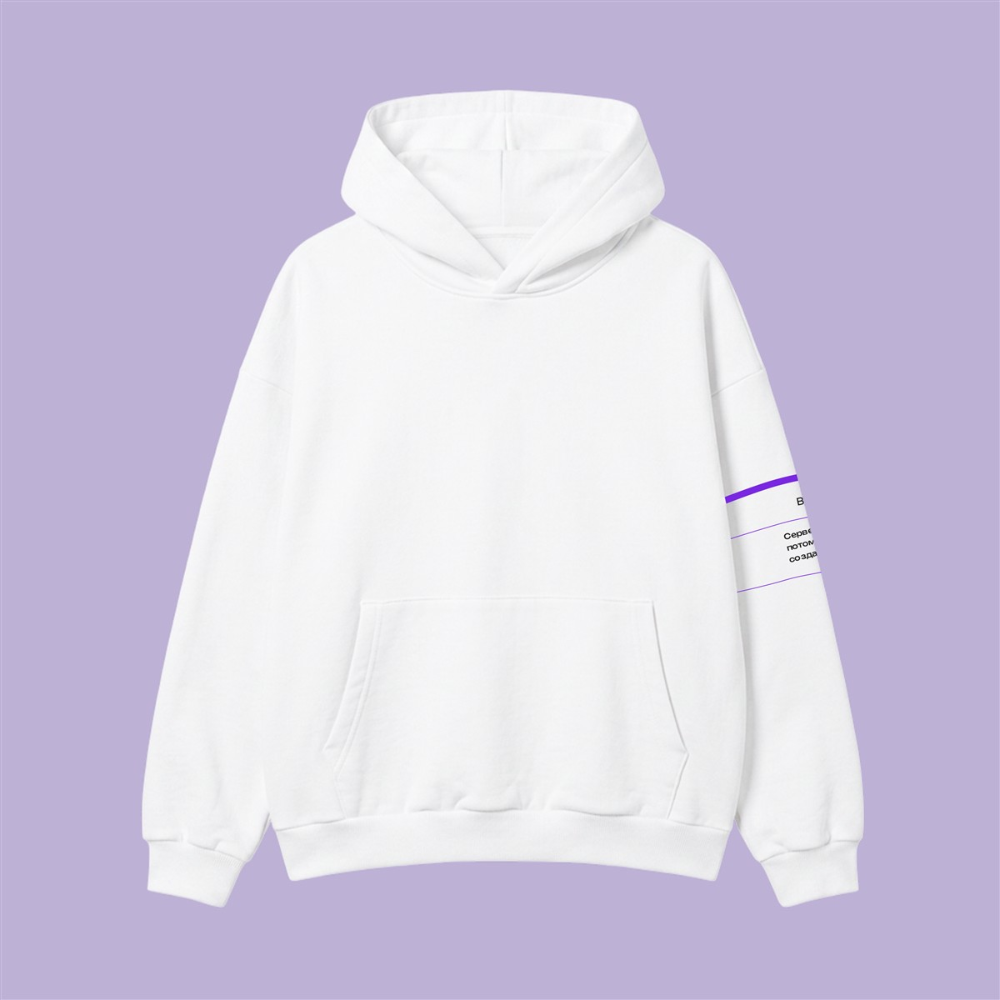
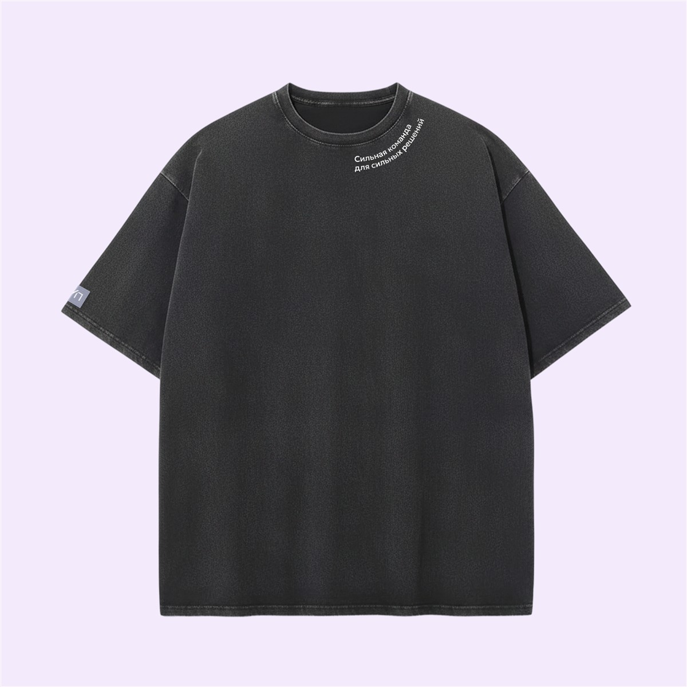
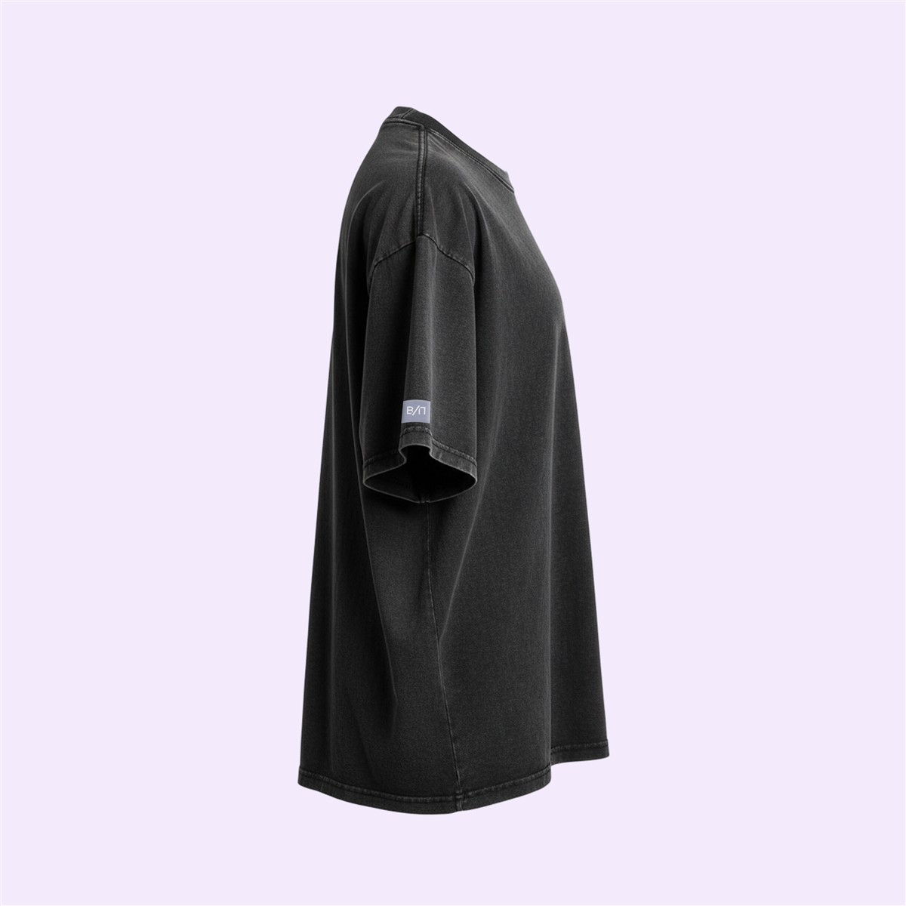
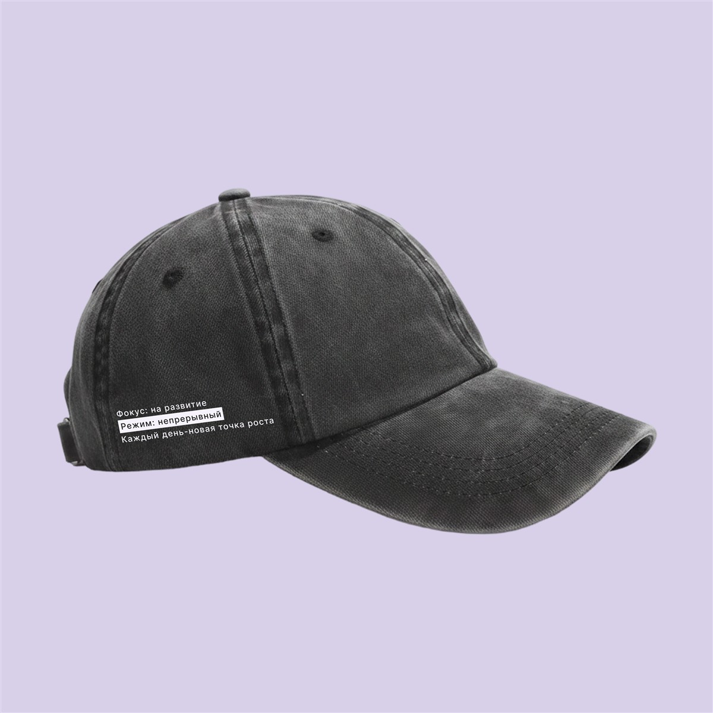
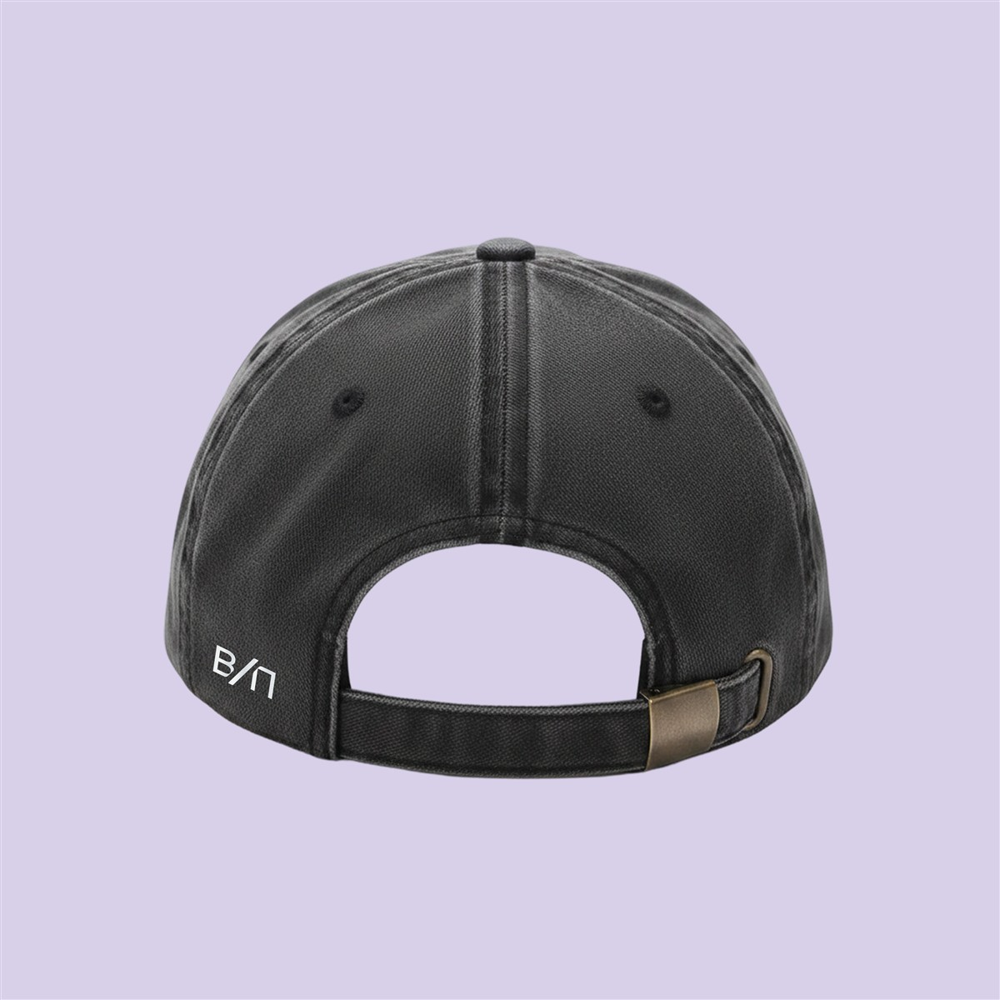
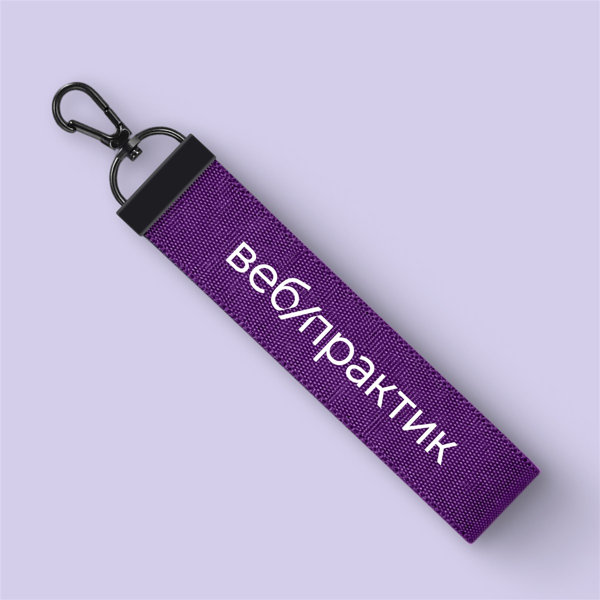

Корпоративный мерч Вебпрактик
Фирменная графика и типографика для худи, футболки, кепки и текстильного брелока.

От логотипа к коллекции
Я взяла за основу фиолетовый слеш из логотипа Вебпрактик. На спине чёрного худи он стал самостоятельной графикой, а на груди осталась компактная подпись бренда. Разница в масштабе делает худи выразительным со спины и сдержанным спереди.


Типографика по форме вещи
На белом худи фиолетовые линии обрамляют надпись на рукаве. На футболке текст о команде следует изгибу горловины, а монограмма появляется на небольшой бирке. Так расположение графики подчёркивает крой каждой вещи.




Бренд в деталях
На кепке я разнесла типографику и монограмму по разным сторонам. На ремувке фиолетовый стал основным цветом, а логотип лёг вдоль ленты. Мокапы показывают, как меняются масштаб и размещение фирменных элементов на разных носителях.


